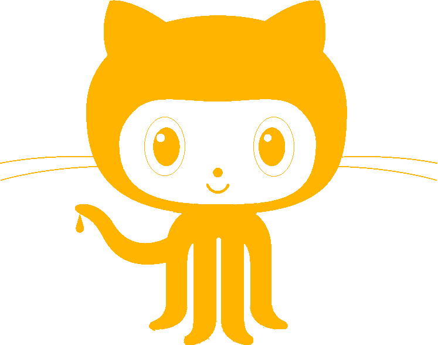

| 13 Nov 2017 | ||
| 12:21:08 | ART | Well despite that I got the dagger pointing North |
| 12:19:41 | FAILURE | |
| 12:01:24 | INDIEDB | Very likely the next version will be available for IndieDB as well, but actual preps for that will come once the uploading actually starts. |
| 11:59:42 | SITE | Added tag INDIEDB |
| 10:18:20 | ITCH.IO | Prepared The Fairy Tale REVAMPED for itch.io |
| 10:18:09 | SITE | Added tag ITCH.IO |
| 12 Nov 2017 | ||
| 23:46:23 | CLOSED | #33 |
| 23:46:17 | DONE | All done #33 |
| 23:46:09 | DONE | Gravatar #33 |
| 23:45:59 | DONE | Non-Member Script #33 |
| 22:43:34 | SITE | Oh my.... that's 1000 entries in this Devlog already.... Geez.... |
| 22:43:16 | UPDATED | #33 |
| 22:41:57 | ART | Hat icon |
| 22:36:03 | FAILURE | |
| 22:35:49 | FAILURE | |
| 22:35:32 | FAILURE | |
| 22:34:28 | FAILURE | |
| 22:26:02 | BUILDER | Cosmetic update |
| 20:21:37 | BACKUP | While I'm resting I'll run the backup... That tool doesn't need me after all... |
| 20:20:36 | PLAN | My plan is to support daggers next, but that should aside from all the artwork be easy now |
| 20:20:11 | STATUS | I need a break now... I'm really tired |
| 20:11:19 | TODO | #33 |
| 20:07:30 | ANNA | Updated |
| 20:06:17 | TODO | #32 |
| 19:59:38 | CLOSED | #19 |
| 19:59:34 | FIXED | |
| 19:59:30 | CONFIRMED | Yup |
| 19:58:44 | SOLVED | Found the bugger? |
| 19:58:13 | BUG | |
| 19:58:01 | DONE | Player name should now show the username, resolving #19 |
| 19:53:57 | CLOSED | #31 |
| 19:53:46 | JUDGMENT | |
| 19:52:57 | DONE | Finetuning |
| 19:52:47 | JUDGMENT | |
| 19:51:58 | DONE | I did alter things a bit for #31 , but is this better? |
| 19:50:08 | FIXED | |
| 19:48:33 | CONFIRMED | AT LAST! |
| 19:45:07 | STATUS | And with that all should be well... (I hope) |
| 19:44:51 | DONE | Throwing rocks costs an action |
| 19:44:11 | FIXED | |
| 19:41:21 | DONE | a needed break |
| 18:54:23 | FIXED | PLLLEEEAAASSEE!!! |
| 18:53:22 | COCKROACH | |
| 18:50:20 | TEST | And let's test it now NOW |
| 18:50:12 | DONE | For debugging reasons the number of rocks was infinite, but I now made the cap on them work |
| 18:47:30 | CLEANUP | Deactivated my glue debug line |
| 18:47:00 | FIXED | |
| 18:45:41 | SOLVED | I think I found the source of evil in this cockroach |
| 18:43:21 | MYSTERY | But that still happens... Hmmm |
| 18:43:12 | JUDGMENT | |
| 18:40:10 | DEBUG | |
| 18:40:02 | FIXED | |
| 18:38:17 | DEBUG | |
| 18:38:12 | MYSTERY | But I see the entire kill queue is being ignored... why? |
| 18:37:59 | COCKROACH | |
| 18:34:26 | TEST | Will this "nil" it? |
| 18:33:15 | NOTE | Irony... Normally nils kill a program and now something must be nil and it crashes the program because it isn't... |
| 18:32:49 | SOLVED | Just as I thought.... The fetcher doesn't respond to 'kill' meaning the stuff remains in the memory... |
| 18:31:21 | DEBUG | |
| 18:28:30 | COCKROACH | |
| 18:26:59 | UNDESIRABLE | #31 |
| 18:25:43 | FIXED | |
| 18:25:21 | COCKROACH | |
| 18:25:06 | CONFIRMED | Solution confirmed |
| 18:24:03 | SOLVED | Wait! I think I got it |
| 18:21:42 | DEBUG | |
| 18:19:59 | COCKROACH | |
| 18:18:26 | SOLVED | I think I solved this.... At least I hope so |
| 18:17:01 | FIXED | |
| 18:15:25 | MYSTERY | Now I'm stunned as the data the debugger shows is.... CORRECT |
| 18:14:02 | DEBUG | |
| 18:10:17 | COCKROACH | |
| 18:08:20 | FIXED | |
| 18:08:07 | SOLVED | I may have found the reason for that one |
| 17:49:47 | COCKROACH | |
| 17:47:56 | FIXED | |
| 17:47:47 | SOLVED | That issue too, I just needed some default values |
| 17:46:42 | COCKROACH | |
| 17:46:09 | FIXED | |
| 17:45:00 | SOLVED | I think I found the reason why the system was talking bullshit, but let's test to make sure! |
| 17:43:47 | NOTE | (If it was not bullshit the "table img" wouldn't be in the list, and yet it's there). |
| 17:43:06 | CONFIRMED | This data confirms this is bullshitnumber gx; |
| 17:37:19 | DEBUG | |
| 17:34:13 | COCKROACH | I call it:
|
| 17:26:08 | DEBUG | |
| 17:22:01 | COCKROACH | |
| 17:18:39 | FIXED | |
| 17:14:42 | BUG | |
| 17:14:02 | BUG | |
| 17:12:12 | TEST | Only one way to find out, eh? |
| 17:12:03 | DONE | The visual effect should now also work.... I hope.... |
| 17:00:07 | NOTE | But you will not see the rock yet |
| 17:00:00 | DONE | Well throwing rocks works, or at least it should |
| 16:46:43 | NOTE | Since I cannot test anything yet since all the actions are "invisible" I need to move on to my next course of action |
| 16:45:57 | NOTE | Please note that Cynthia will also be able to throw daggers. Daggers can be recovered after being thrown, but rocks cannot. |
| 16:45:33 | DONE | Projectile creation routine done |
| 15:56:31 | TODO | With that out of the way, throwing the rock is my next concern |
| 15:55:17 | FIXED | |
| 15:55:08 | STUPIDITY | |
| 15:54:24 | STUPIDITY | |
| 15:53:31 | DEBUG | |
| 15:52:36 | COCKROACH | |
| 15:51:37 | TEST | Another attempt..... :-/ |
| 15:51:31 | COCKROACH | |
| 15:49:42 | TEST | Okay, then this.... |
| 15:49:34 | COCKROACH | |
| 15:48:39 | TEST | Then this.... |
| 15:48:34 | COCKROACH | |
| 15:46:29 | TEST | Let's try this |
| 15:40:41 | COCKROACH | |
| 15:39:35 | FIXED | |
| 15:39:19 | FIXED | |
| 15:35:50 | BUG | |
| 15:32:40 | BLITZMAX | |
| 15:28:06 | FIXED | |
| 15:21:17 | TEST | Of course, now it's time to put all this to the test... :-/ |
| 15:18:11 | DONE | When you pick up a rock, a button should appear to allow mouse/touchscreen users to throw it (in the direction Cynthia faces, now you kno why turning is important). The throw button itself does not yet work, it should only appear and tell you how many rocks you've left. |
| 15:00:52 | CONFIRMED | Picking up rocks works |
| 14:56:26 | FIXED | |
| 14:56:07 | STUPIDITY | |
| 14:52:39 | FIXED | |
| 14:51:31 | BUG | |
| 14:36:08 | DONE | Pickup Rocks |
| 14:32:23 | CLEANUP | Well, I guess it's better to clean up all shit anyway :P |
| 14:25:36 | DONE | "Kill" type for removed objects. Although still in the memory they are no longer accesible. |
| 13:54:35 | BACKUP | I'll run an extra backup while I'm frying eggs |
| 13:52:33 | TODO | Before that though, it's time for lunch! |
| 13:50:39 | TODO | Next step picking up the rocks |
| 13:50:31 | STATUS | Everything that has to work, appears to work now... |
| 13:50:12 | CONFIRMED | fixes |
| 13:47:23 | FIXED | |
| 13:47:05 | STUPIDITY | |
| 13:41:56 | BUG | |
| 13:40:17 | FAILURE | |
| 13:39:39 | MYSTERY | Neither the rocks nor the snakes appear |
| 12:40:06 | AUDIO | Pickup sound |
| 12:36:35 | SITE | Added tag AUDIO |
| 12:25:59 | PUZZLE | Rocks placed |
| 12:22:40 | TEDDYBEAR | |
| 12:20:27 | ART | Rock |
| 12:11:48 | TODO | #28 |
| 12:03:19 | CLOSED | #29 |
| 12:03:16 | FIXED | |
| 11:58:34 | FAILURE | |
| 11:08:49 | BUG | |
| 11:06:29 | FIXED | |
| 11:06:24 | COCKROACH | |
| 11:04:39 | ANNA | Leaderboards updated |
| 11:04:04 | DONE | Crash prevention on nil |
| 11:02:11 | FIXED | |
| 10:53:52 | ANNA | Puzzle initized |
| 10:48:35 | TEST | Let's test a few things out |
| 10:47:24 | PUZZLE | Egpy level 3 skeleton set up. The snakes and rocks have not yet been placed |
| 10:36:46 | GAMEJOLT | Did my moderation duties... work work work! |
| 10:03:34 | CLOSED | #22 |
| 10:03:31 | FIXED | |
| 09:56:50 | ART | Big Pyramid |
| 00:04:38 | STATUS | But all that is for tomorrow... I'm gonna callit a day... I didn't realise what time it was |
| 11 Nov 2017 | ||
| 23:56:05 | PLAN | My plan is to make it possible in puzzle 3 to actually kill snakes by throwing rocks at them. Of course you realize your amount of rocks is very extremely limited... this is a puzzle game after all. So don't kill all snakes. To speak in Auron's words, only kill the ones that matter. |
| 23:53:26 | SITE | Added tag PLAN |
| 23:52:52 | TODO | Fix myself a sandwitch and take a break ;) |
| 23:50:24 | BACKUP | is running |
| 23:48:42 | STATUS | And with that the time has come to go for level 3, but that is for later or maybe even tomorrow. |
| 23:32:47 | UPDATED | #25 |
| 23:32:19 | MUSIC | |
| 23:31:13 | UNIX | Temporarily removed the project auto-update... Way too many needless commits |
| 23:30:00 | CONFIRMED | Yup! That works the way it should |
| 23:29:14 | TEST | A test will have to confirm that, though... |
| 23:29:02 | FIXED | |
| 23:26:03 | COCKROACH | stack traceback: |
| 23:24:11 | COCKROACH | |
| 23:22:28 | FIXED | |
| 23:19:50 | FIXED | |
| 23:18:34 | FIXED | |
| 23:17:02 | TEST | Of course you realize this means TESTING!!!! |
| 23:16:15 | SCRIPT | |
| 23:14:46 | SCRIPT | |
| 23:13:28 | UPDATED | #25 |
| 23:12:58 | CONFIG | Loader configured for Dead Cynthia |
| 23:11:24 | SCRIPT | |
| 23:09:59 | SCRIPT | |
| 22:59:54 | LHA | Yeah I archived them |
| 22:59:48 | CLEANUP | Piko files removed from repository |
| 22:38:10 | CLOSED | #20 |
| 22:38:07 | FIXED | |
| 20:44:25 | BACKUP | While I'm on break I'll make the backup run... |
| 20:43:32 | GITHUB | Alright, alright I issued that under #27 |
| 20:42:21 | TODO | Death art |
| 20:41:51 | STATUS | I'm also in need of a break though... |
| 20:14:10 | STATUS | Of course, now we've come to the point where Cynthia must DIE!!!! Due to a few misactions of mine this can prove to be a little difficult, but I have a few plans to get around that. |
| 20:12:56 | CONFIRMED | AT LAST! |
| 20:09:28 | FIXED | |
| 20:09:22 | COCKROACH | |
| 20:08:42 | FIXED | |
| 20:08:26 | FIXED | |
| 19:55:30 | FIXED | |
| 19:55:22 | FIXED | |
| 19:52:16 | UPDATED | #25 |
| 19:51:33 | SCRIPT | |
| 19:39:23 | ART | Snake spit |